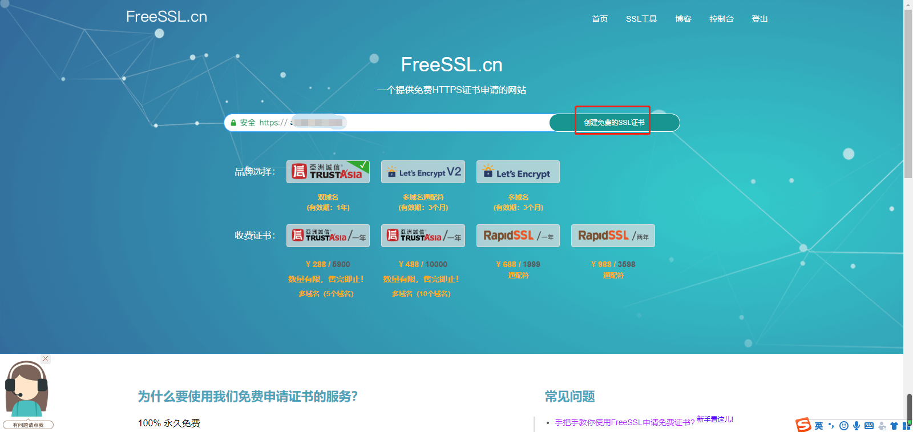
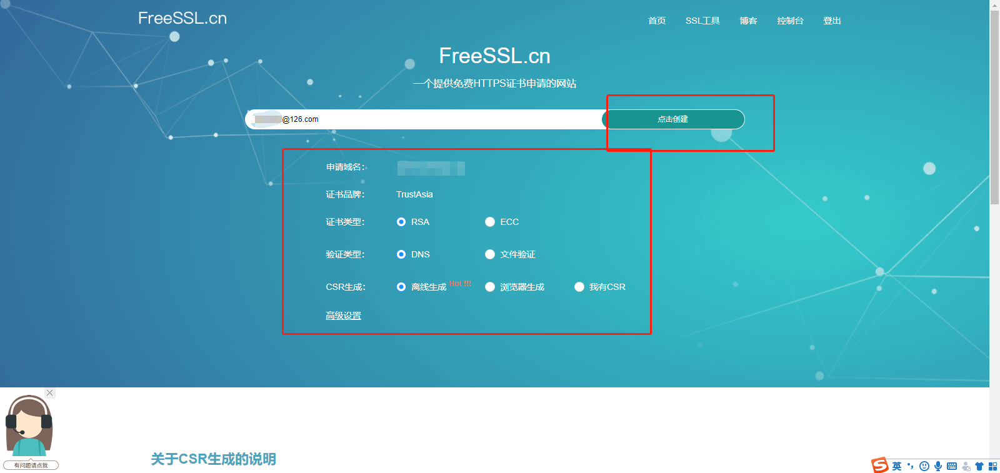
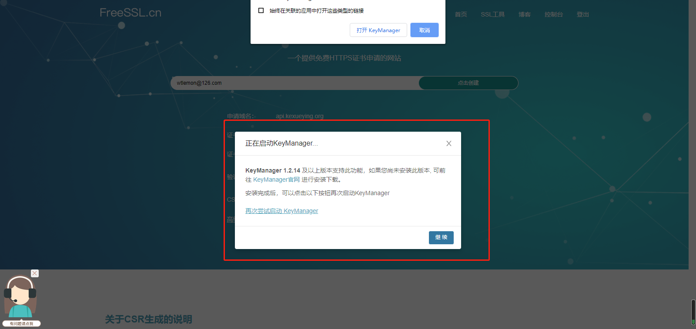
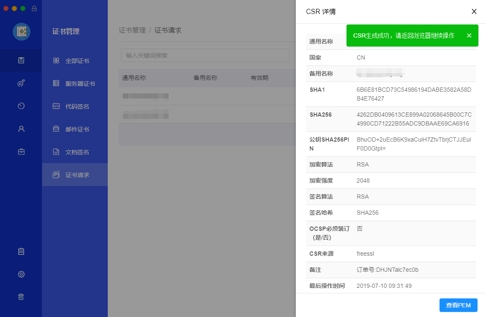
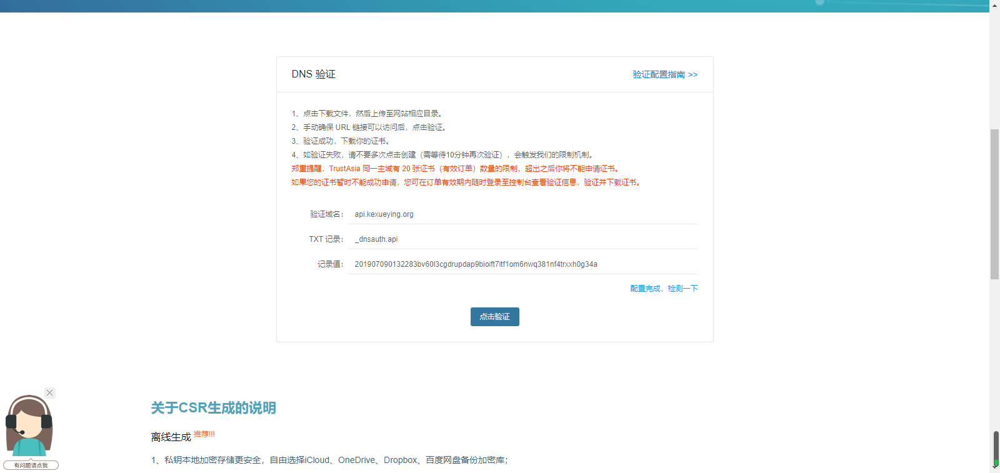
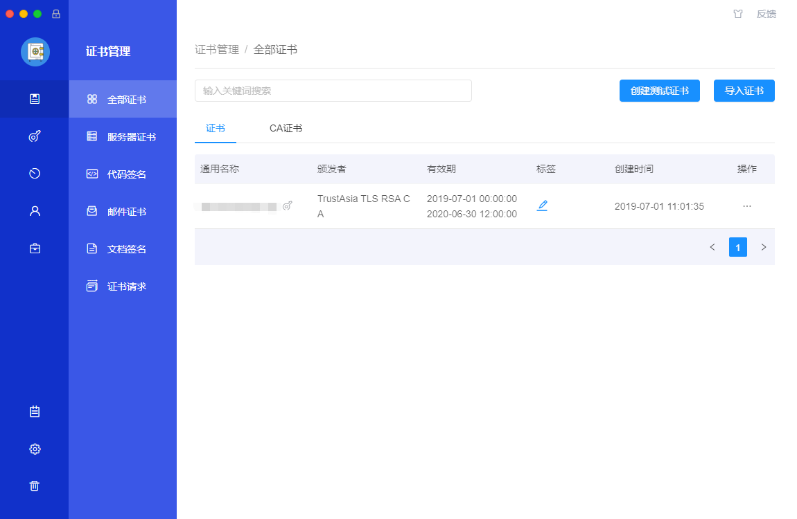
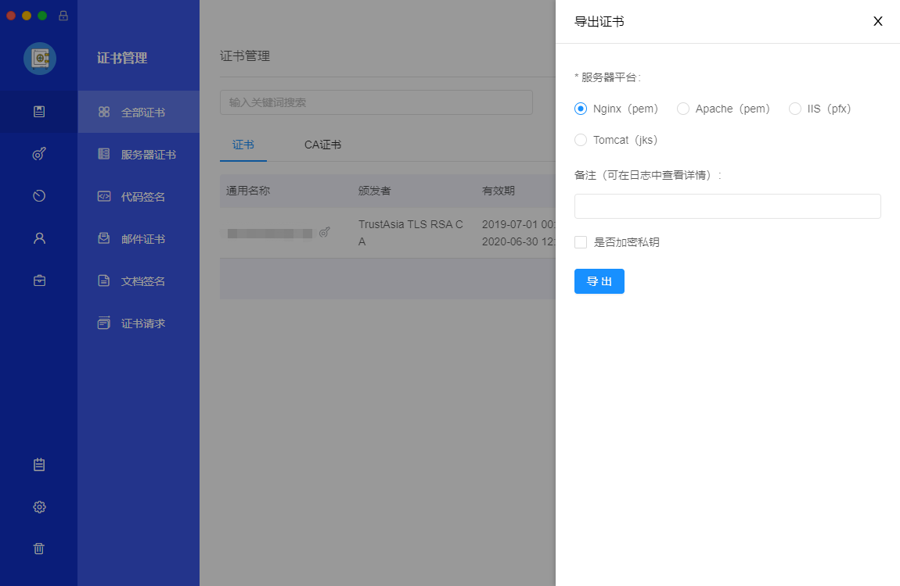
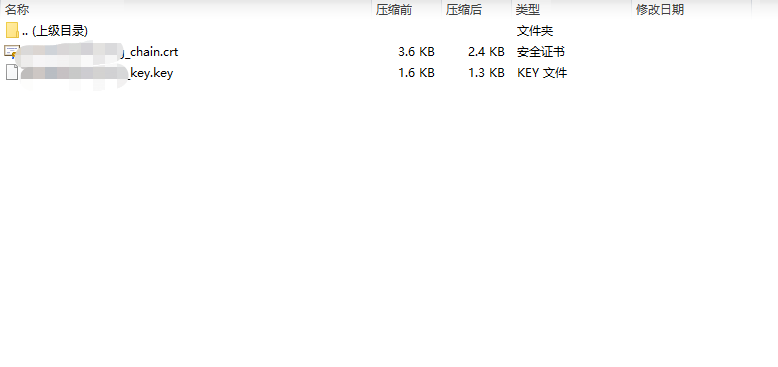

好了，昨天聊了半天感想，今天该来聊聊正事儿了，第一次全程从头到尾参与小程序开发的每一步流程，采坑不断，也获益匪浅，有一点总结，分享给大家。
开发之前，
1.规划明白，自己想要在小程序上做什么事儿，需要用到那些微信提供的接口，这些接口需要什么条件才可以获得，这点至关重要，提前阅读小程序的开发文档十分重要！但是相信大多数人都和我一样，耐不下心来仔细阅读微信的文档，而且他们的文档也不想接口文档一样那么通俗易懂，所以，如果周围有做过小程序的人，提前请教，如果没有，到微信小程序的开发社区上https://developers.weixin.qq.com/community/develop/mixflow逛一下，搜一下想问的问题，上面采过坑的人多的是，总有一个坑适合你~~
2.根据1的结果，准备好注册小程序的资质文件，涉及到的关键权限包括支付，人脸核身等，根据需要，选择合适的服务类目，并填写好小程序的基本信息，有条件的话，最好也完成微信认证（300元）。
3.准备好小程序的接口域名和ssl证书。
4.在小程序控制台，配置好request域名，业务域名等关键配置，设置好体验成员。
至此，开发前的准备工作就基本完成了。
简单介绍下ssl证书的申请流程，按说域名和证书的配置都应该有对应的管理人员来完成，但由于我们的项目是公司第一个完全前后端分离的项目，也是少数需要部署ssl证书的项目，所以这个申请流程也是我们自己来完成的，对于小程序来说，有一个免费的证书就足够了，当然这个也是看业务需要，如果你们公司需要扩展业务，需要适配通配符域名，安全性更高，兼容性更好的证书，那就得花点银子了。
这里我就说一下免费证书的申请流程。
目前，阿里，百度，腾讯等各大平台都有提供申请免费证书的入口，但有一定的限制条件，就是你的服务器地址最好也是他们的，申请和配置的过程会非常简单，我们的情况不一样，所以我的ssl证书没有在他们的平台申请，而是在freesslhttps://freessl.cn/上申请的，这也是一个在开发者领域享誉盛名的证书签发地址，没有诸多限制，口碑极佳，推荐各位如果需要免费的ssl证书，到此一游。
首先，输入你要申请证书的域名

然后，选择证书类型（一般情况默认就好），输入邮箱地址，

点击创建后，会提示你下载keymanager客户端，如果没有下载过，就下载一下，然后刷新页面，下载后直接打开，

接着会在keymanager客户端完成证书的生成

然后返回浏览器，进行dns验证解析，

这里需要将证书生成的txt类型记录值，拿到域名申请的地方，去填写下域名的txt记录值，这里因为我之前已经配置好了，这一步就不演示了，
需要大家打开域名申请的网站，填写freessl生成的txt记录值，然后点击dns验证，即可验证通过。
之后回到keymanager，即可在全部证书的列表里，看到刚刚颁发的合法证书

然后就是将证书导出，到服务器上配置一下就OK了

我们需要的是nginx类型的，需要说明一下，如果你需要导出的是iis类型的证书，那么需要配置证书私钥，其他类型不需要，可有可无。

在服务器上导入证书的流程我就不说了，nginx的证书导入还是比较简单的，本身nginx的配置文件也没多少行，大致流程是将证书放在nginx根目录下，最好是新建一个文件夹，然后把证书路径配置到nginx配置文件中，重启就可以了，如果你的网站用了反向代理，那么证书需要导入到反向代理服务器，类似的教程多的是，不再多说。
至此，我们的准备工作完成。
开始开发
进入开发阶段，其实就看各自需求了，我们的业务需求比较简单，前一篇提过我们的审核未通过，因为主体不符合要求，涉及了人脸识别，所以未能顺利通过，但我想说的是，很多事情就是这样，结果可能并不尽人意，但过程需要足够精彩，在过程中学习成长，可能这次结果不好，但有了这样的经验，下次就不会在同一个地方栽跟头，不能因为怕出错，就不敢尝试。
好了，说一下我们遇到的需求，大概列表如下
1.通过人脸识别+定位完成学生的自助签到
2.通过1的结果，完成绑定学生的微信绑定，可以通过微信登录系统，完成相关操作
3.在小程序内使用web-view,快捷访问之前做好的手机站
大概的需求就是这样，来看一下实现
首先，人脸识别我们用的是百度的接口，简单聊一下人脸识别，这个属于AI的范畴，目前国内在人脸识别做的好的有，B.A.T，旷视(face++)，虹软等几家企业，可以说各有所长，论坛上说，旷视在这方面是做的最好的（我想也是，因为就他收费高，支付宝和好多手机品牌的人脸识别技术就是旷视的…），但从成本来看，百度是最合适的，只要完成了企业认证，就可以获得10QPS的配额也是非常厚道了，而且百度也提供离线sdk，只是对计算能力有一定的要求，而且百度的技术也是值得信赖的（众所周知百度是国内技术信仰值最高的企业），所以我们选择了百度；
这里我分享一下，根据百度提供借接口API来封装人脸识别接口的过程，不建议直接使用它的sdk，因为sdk的封装标准是要求最低依赖，最高兼容，但调用百度接口的时候需要有一个token，这个值其实是有30天有效期的，但由于sdk有封装标准，他就不能设置token的有效期，只能每次调用前都获取一次token来规避token过期的问题，也就造成了一些资源的浪费，所以，建议大家根据api文档http://ai.baidu.com/docs#/Face-Guide/top，自己封装符合自己项目的sdk，自己封装就可以有一些依赖，比如我们可以引入redis来缓存token，这样就能提高效率，来看一下代码
1 | /// <summary> |
然后将接口返回值封装成类
1 | public class BdAIFaceSearchModel |
然后可以实现1：N搜索的具体方法，httppost是网络请求方法，JsonHelper是解析对象和json字符串的帮助类
1 | /// <summary> |
接着就可以在写接口调用了
1 | /// <summary> |
这里我只介绍了1：N搜索的封装调用过程，其他接口类似，可以看到，我在接口里只是简单的逻辑判断，没有写很多复杂的逻辑，这符合restful接口的编写原则，逻辑清晰简单，别人看的时候，不会因为代码的晦涩而感到迷茫，可以很快接手并扩展，这才是接口的正确打开方式（好像是在自夸…），其实不管是做什么项目，都不应该把代码写的长篇大论或者晦涩难懂，如遇特殊情况也要加以注释说明，这既是对自己负责，也是对团队负责。
此外我们的项目还涉及小程序的消息推送，以及手机号码的解析，这个都属于那种有固定写法的，只要遵照微信开发文档的要求，都不是什么难事，分享下我们的写法，仅供参考
1 | /// <summary> |
解密微信手机号
1 | /// <summary> |
1 | /// <summary> |
好了，大概的技术要点就是这些，后面两段属于公式类型的，写好了一次，只要微信的开发规则不变，代码也基本不用变，其实开发的流程是比较顺畅的，只要需求搞明白，开始写代码的时候就成竹在胸，就像拼拼图一样，很快就可以完成，所以我之前在博客里反复会说，结题的思路还是最重要的，思路清晰了，代码自然而然就写出来了，这是一个很流畅的过程。
好了，这篇就到这。